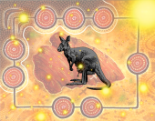
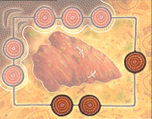
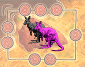
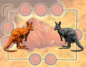
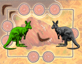
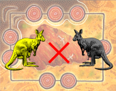
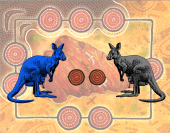
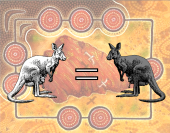
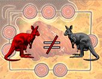

|  |
That's really rare! A species showing this card is happy anywhere :) |
|  |
Geographical preferences: the species wants one of the marked places. |
|  |
Really dear friends: the species wants to stay next to pink kangaroos (A-B, C-D, F-G, G-H). |
|  |
Keep an eye on the enemy: the species wants to stay in front of orange kangaroos (A-E, B-E, C-H, C-G, D-G, D-F). |
|  |
Good friends: the species wants to share a corner with green kangaroos (A-H, B-C, D-E, E-F). |
|  |
What if the enemy is watching: the species doesn't want to stay in front of yellow kangaroos. |
|  |
Big conflict: the species wants to have at least two other species between them and the blue kangaroos. |
|  |
Lack of personality: the species wants the same as white kangaroos. |
|  |
That's weird: the species wants the opposite of the red kangaroos. |